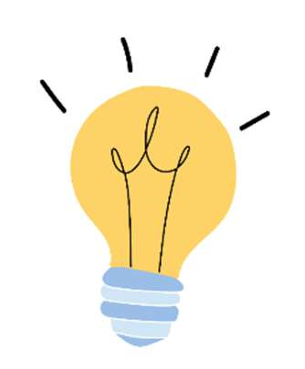
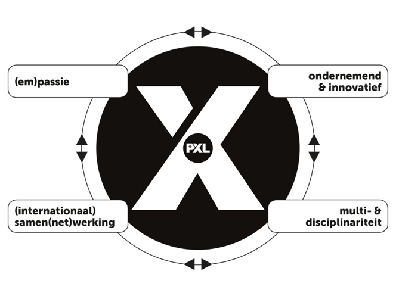

Reflectie Werkplekleren 1 (wpl 1)
Intro:
WPL1, of Werkplekleren 1, is een vak dat we drie uur per week volgden. In dit vak worden we klaargestoomd om later samen te werken met andere programmeurs binnen een bedrijf. WPL1 start gelukkig rustig: de leerkrachten nemen de rol van klant op zich en geven ons opdrachten die we moeten uitwerken. In het begin ligt de focus vooral op individueel werken. We krijgen oefeningen om eerst onze persoonlijke vaardigheden te ontwikkelen voordat we effectief in teamverband moeten samenwerken. In de toekomst is het echter zeker de bedoeling dat we ook met anderen gaan samenwerken, zodat we stap voor stap groeien richting een professionele werkomgeving.
Wat goed is gegaan:
Ik heb twee favoriete opdrachten die bijzonder goed gingen. De eerste was het schrijven van een instructielijst voor het maken van een boterham met confituur. Dat klinkt misschien vreemd, maar we moesten echt rekening houden met elke afzonderlijke stap. Probeer het zelf maar eens — je merkt snel hoe precies je moet zijn. Hieronder staat een video met een voorbeeld. Deze opdracht leerde ons hoe belangrijk het is om duidelijke en ondubbelzinnige instructies te formuleren voor een computer, anders krijg je soms verrassende (en vaak hilarische) resultaten.
De tweede opdracht was de Scratch‑opdracht. Die was zowel heel leuk als behoorlijk uitdagend. Het leukste deel was het ontwerpen van de game en de creatieve vrijheid die we kregen. De moeilijkheid lag niet zozeer in het “programmeren”, maar in het haalbaar houden van mijn ideeën. Zodra ik in een creatieve flow kom, blijf ik vaak nieuwe dingen bedenken, waardoor het project soms groter wordt dan oorspronkelijk de bedoeling was.
Wat minder goed is gegaan:
Het tempo van leren en uitvoeren lag voor mij soms wat te hoog. Ook het samenvoegen van twee klassen had ik liever anders gezien. Ik begrijp dat het de bedoeling is om te leren samenwerken met anderen, zeker met mensen die je nog niet kent, maar WPL1 bestond vooral uit persoonlijke, individuele oefeningen. Daardoor had deze lessenreeks volgens mij perfect per klas kunnen verlopen, wat ook meer ruimte had gegeven voor persoonlijke begeleiding door de leerkrachten. Daarnaast zorgde de grotere groep voor meer afleiding, iets waar ik het nog steeds moeilijk mee heb — vooral tijdens de PE’s merkte ik dat dit een uitdaging vormde.
Nieuwe inzichten:
Het plannen van opdrachten en projecten is voor mij steeds belangrijker geworden. Ik probeer niet meer zomaar blindelings ergens in te vliegen. Bij opdrachten die we thuis mogen maken, maak ik eerst een schets van wat ik wil bereiken en hoe het er uiteindelijk moet uitzien. Dat helpt me om gestructureerd te werken en een duidelijk beeld te hebben voordat ik begin te programmeren.
Mijn succes in WPL2

Ik ben zeer trots op mijn portfolio. Ik heb er vele uren in gestoken en ik hoop dat u (de lezer) dit kan zien!
Wat neem ik mee naar wpl2:
kernkwaliteit:
Creativiteit
Ik ben van nature een creatieve persoon,
valkuil:
Mijn valkuil hier is tijdsbesef. Zodra ik in mijn flow zit, kan ik heel veel ideeën bedenken, maar daar zitten soms ook niet‑haalbare concepten tussen. Gelukkig kan ik mezelf beschermen door vooraf een goede planning te maken en me daaraan te houden.
Allergie:
Mensen die alleen “the bare minimum” doen, of tegenwoordig alles door AI laten uitvoeren, vind ik soms lastig om mee samen te werken. Zelf gebruik ik ook AI, maar ik laat het niet mijn ideeën bepalen. Ik gebruik het vooral om mijn taal te controleren of om me te ondersteunen bij het maken van een planning. Zo blijft het mijn werk, met AI als hulpmiddel in plaats van vervanging.
Uitdaging:
De uitdaging die ik mezelf geef is om mijn creativiteit te gebruiken zonder te veel ideeën te bedenken. Ik probeer mezelf te beperken tot een paar ideeën die ik echt kan realiseren, zodat ik niet overbelast raak.
X‑factor
(em)passie
Een voorbeeld van mijn (em)passie is dit portfolio. Ik heb er veel tijd ingestoken om "the extra mile" te gaan. Hoelanger ik er aan werk hoe meer ideeën ik krijg om het beter te maken. Dit laat mijn passie voor programmeren en webontwikkeling zien. Dit is ook iets wat ik in de toekomst ga bijhouiden en verder ga ontwikkelen.
ondernemend & innovatief
Mijn porfolio is al in vele voorbeelden tevoorschijn gekomen en ook hier wil ik het als voorbeeld nemen. Het is tot nu toe het grootste project dat ik heb gemaakt en ik heb er veel nieuwe dingen bijgeleerd. Mijn innovatief vermogen komt hier vaak naar voren doordat ik steeds op zoek ben naar nieuwe manieren om dingen te verbeteren of te vernieuwen. Zoals bijvoorbeeld extra tijd steken in de fundamenten van mijn portfolio om het later makkelijker te maken om nieuwe pagina's toe te voegen.
multi- & disciplinariteit
Het maken van de WPF applicatie "slotmachine". Hier kwamen meerdere rollen samen in 1 project.
- Ontwerper: Nadenken over de structuur, layout en gebruikvriendelijkheid
- Programmeur: Implementeren van de logica en functionaliteit
- Tester: Testen van de applicatie om bugs en fouten te vinden en op te lossen.
(internationaal) samen(net)werking
Bij de presentatie communication skills moesten we met een medestudent samenwerken. We verdeelde de taken, stemde onze inhoud op elkaar af en oefende samen om een duidelelijke presentatie te geven.